The following script is a tutorial on the methodology of what I call "Shape Prescriptive Modeling". Its a tool for modeling a function of a single variable
y = f(x) + error
The actual model will be in the form of a least squares spline. Shape prescriptive modeling is really a way of thinking about a model - it has a lot of very Bayesian underpinnings. I'll get to that in a bit. First, lets talk about modeling, who builds models, and why we choose a specific model form.
Why do we, as scientists and engineers, fit a curve to data? There are really two basic reasons why, if we ignore the common "My boss told me to do this." The first such reason is for purely predictive value. We may wish to reduce some set of data to a simply accessible functional relationship for future use. The process of modeling may allow us to smooth the data, producing a smooth curve where only distinct data points fell before. As well, this smooth curve is now a platform for interpolation. Note that if we have smoothed the data, removing unwanted noise that was present in the data, then the interpolant is more an approximant. I.e., one will not interpolate the data, but a smoother form of it.
The second common goal of curve fitting is often to predict/estimate some parameter of the relationship, such as a minimum or maximum value where the curve approaches an asymptote, or perhaps a maximum slope or a rate parameter.
If we are to fit a model to data, what kind of models do we use, and how does the model class reflect our goals in the modeling process? To answer this question, I'll first look at the common modeling tools we might see. First and most primeval is polyfit. Polyfit allows us to fit a polynomial model to our data. Such a model tells us little about our process beyond perhaps a simple slope. These models are really of value only for very simple relationships, where we are willing to invest little in the modeling process. Many of the individuals who use polynomial modeling tools do so for the wrong reasons. They use higher order polynomial fits to get a better approximation to their data, not realizing the problems inherent with those higher order polynomials.
At the other end of the spectrum, one sees individuals using nonlinear regression to fit a large variety of curves to data. Exponential terms, gaussian-like modes, sigmoid shapes, as well as many more. Did these model forms result from valid mechanistic arguments? I.e., has the analyst developed a real model of the process under study, where all that is left is to estimate the parameters of that model from data?
Sometimes it is so, but far more often the analyst individual knows something about the basic underlying process, and the model chosen has the correct basic functional shape. I'll argue that truly valid mechanistic models are nearly as rare as hen's teeth.
There is a subtle variation on the mechanistic model. I call it the metaphoric or metaphorical model. Here we use a mathematical model of one process that we do understand, used as a model for a process that we do not really understand. My favorite examples of such metaphorical models are cubic splines, where a mathematical model of a thin flexible beam is used to predict many other processes. A second good example is the use of epidemiological models as used to predict sales of some product. There are many other examples of course.
An advantage of a metaphorical model is it may help us to understand/ predict/even extrapolate future behavior based on our knowledge of the metaphor. Many of the nonlinear regression models that we see built in Matlab are of the shape variety. I.e., we see a bell shaped curve, so we fit a gaussian to it. We see a function with a lower and upper constant asymptote, and we fit some variety of logistic function, or an erf variant to it. If the fit is inadequate for our purposes, we try another functional form. I'll argue that this group of individuals is often using nonlinear regression for the wrong reason. They simply want some curve that behaves the way they know it should. Examples of this might be a photographic film modelor, who knows the film darkens as more photons land upon it, or a biologist, who knows that the count of bacteria in a petri dish will grow with time. (All of these examples have limits, but a good scientist/engineer will know those limits.)
The fact is, we often understand something about a process we are trying to model. What we may not have is the ability to build that knowledge and understanding into our model. Even if we know the underlying functional relationship is monotone increasing/decreasing, how do we estimate a model that has that behavior built into it? This is where shape prescriptive modeling shines. It is really a very Bayesian concept. It is the process of quantifying our basic knowledge of a process in mathematical terms, and then estimating a predictive model of the process that has that knowledge built into it. Our knowledge becomes a prescription for the final shape of the process. Sometimes we know much about a process, in which case we have a detailed prescription. Other times we have a very sketchy prescription.
The slm tools in this toolkit are designed to help the user to embed their knowledge into a model using a langauage of shape. One builds a prescription for the desired shape, then combines it with their data to build a model. These steps can be done distinctly, where an explicit prescription is created, then applied with a modeling engine to data, or the prescription can be built in a fluid manner using a gui. Here a point and click interface can provide the information necessary.
Some final notes before we begin actual experimentation: This toolkit assumes possession of the optimization toolbox.
Also, all examples will use the commandline engine for modeling, instead of the gui interface. One good reason is that at the time of writing this tutorial, I had not finished writing the gui. A better reason is that anything that can be done via the gui is also possible to do using the computational engine, and cell mode favors this approach.
Finally, ...
Contents
- Some data
- Polyfit?
- Less data, more noise, with polyfit
- A piecewise linear SLM fit
- Shape prescriptions
- Use of slmset
- Evaluating a model
- Plotting a model using plotslm
- slmengine can plot too
- Computations on a spline model, min max, integral, etc.
- Curvature constraints
- Monotonicity constraints
- Both curvature and monotonicity constraints
- Minimum slope or maximum slope constraints
- Extrapolation in the fit, non-uniform knot spacings
- Piecewise constant models
- Fixed specific values
- Flawed information, "Garbage in, garbage out"
- Too many knots?
- Use in practice
- Returning a set of points, evaluated through the fitted curve.
- Combining various constraints to produce a better model
- Extrapolation of a spline model
- You can get information about the fit itself
- Knot placement optimization
Some data
Lets start out by creating some data. A simple functional form that we understand the shape of.
n = 100;
x1 = sort(rand(n,1));
y1 = exp(x1) + randn(n,1)/20;
plot(x1,y1,'ro')

Polyfit?
First, lets build a simple model using polyfit.
P = polyfit(x1,y1,6); xev = 0:.001:1; yev = polyval(P,xev);
and plot the results on top of the data
plot(xev,yev,'g-',x1,y1,'ro')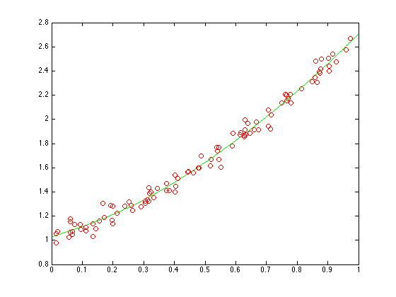
Are you happy with the resulting curve? Perhaps. Much depends upon our goals in building a model for this process. How good of a fit do we really need, how much noise is there in the data? Does the model behave as we believe it should? Does this model have lack of fit? Actually, it looks pretty good to me, at least given the amount of noise in the data. But see what happens when I use a high order polynomial model.
This one was just too much, with condition problems.
P = polyfit(x1,y1,15); xev = 0:.001:1; yev = polyval(P,xev);
Warning: Polynomial is badly conditioned. Add points with distinct X values, reduce the degree of the polynomial, or try centering and scaling as described in HELP POLYFIT.
and plot the results on top of the data
plot(xev,yev,'g-',x1,y1,'ro')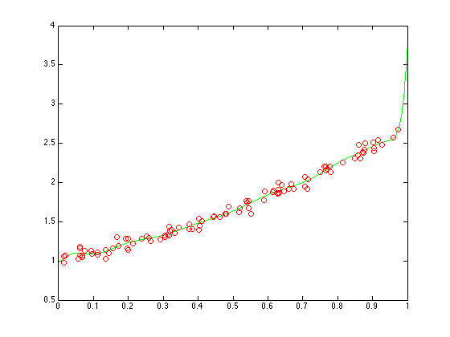
Less data, more noise, with polyfit
Lets try again, only this time we'll use less data, with a much higher level of noise.
close n = 30; x2 = sort(rand(n,1)); y2 = exp(x2) + randn(n,1)/3; plot(x2,y2,'ro') P = polyfit(x2,y2,6); xev = linspace(min(x2),max(x2),100); yhat = polyval(P,xev); hold on plot(xev,yhat,'g-') hold off

Its a clear example of overfitting this noisy data.
A piecewise linear SLM fit
Now lets try using the slm tools. After all, its why we are working through this tutorial.
slm = slmengine(x2,y2,'degree',1,'plot','on')
slm =
form: 'slm'
degree: 1
knots: [6x1 double]
coef: [6x1 double]
stats: [1x1 struct]
prescription: [1x1 struct]
x: [30x1 double]
y: [30x1 double]
Extrapolation: 'constant'

note that the result from slmengine is a structure. It contains 7 fields, and has much the same information as the 'pp' form does.
'form' is (in this case) 'slm'. This means that the function this structure contains is a slm model. We could have had it return a pp form instead.
'degree' is the polynomial degree of the piecewise segments. 1 indicates a piecewise linear function, continuous across the breakpoints (or knots.) Note that the splines toolbox tends to use the term 'order', one more than the degree.
'knots' contains the set of knots or breakpoints. The default is to use 6 equally spaced knots, from min to max of the data.
'coef' is the set of coefficients of the spline model. I've used a Hermite form here. Its an easy one to understand, as well as to look at the coefficients and visualize the shape of the curve. The field coef contains the value of the function at the corresponding knot.
'prescription' is the default prescription. A bayesian might call it an uninformative prior. Its the list of all settings for every optional parameter one can set for a model. Since we specified nothing but the data in our call to slmengine, we get all defaults.
Finally, there are fields for x and y. The model thus contains the data used to build it. This serves a documentation purpose but it also allows plotslm to work well later.
Shape prescriptions
We can look at the parameters in slm.prescription, but now is as good a tiem as any to see what slmset does for us. Here are the default set of properties.
prescription = slmset
prescription =
C2: 'on'
ConcaveDown: 'off'
ConcaveUp: 'off'
ConstantRegion: []
Decreasing: 'off'
Degree: 3
EndConditions: 'estimate'
Envelope: 'off'
ErrorBar: []
Extrapolation: 'constant'
Increasing: 'off'
Integral: []
InteriorKnots: 'fixed'
Jerk: ''
Knots: 6
LeftMaxSlope: []
LeftMaxValue: []
LeftMinSlope: []
LeftMinValue: []
LeftSlope: []
LeftValue: []
LinearRegion: []
MaxSlope: []
MaxValue: []
MinSlope: []
MinValue: []
NegativeInflection: []
Order: []
Plot: 'off'
PositiveInflection: []
Predictions: 1001
Regularization: 0.0001
Result: 'slm'
RightMaxSlope: []
RightMaxValue: []
RightMinSlope: []
RightMinValue: []
RightSlope: []
RightValue: []
Robust: 'off'
Scaling: 'on'
SegmentConstant: []
SegmentLinear: []
SimplePeak: []
SimpleValley: []
SumResiduals: []
Verbosity: 0
Weights: []
XY: []
XYP: []
XYPP: []
XYPPP: []
YScale: []
YShift: []
slmset is the tool that allows us to specify a variety of pieces of information to the engine.
Use of slmset
Help slmset will list all the options. It works on a property/value pair interface. There are a wide variety of properties that one can set, enough to satisfy almost any type of information a user can bring to a modeling problem. Here are the options one can set:
help slmset
slmset: defines the shape prescription for a model
usage 1: prescription=slmset(prop1,val1,pro2,val2,...)
usage 2: prescription=slmset(prescription,prop1,val1,pro2,val2,...)
A set of property/value pairs are parsed into a structure
to use as the prescription for slmengine and slmfit.
arguments:
prop, val - property/value pairs (see below for the complete list)
There is no limit on the upper number of property/value
pairs allowed.
Property names may be shortened, as long as they are
unambiguous. Case is ignored.
prescription - shape prescription structure, defining that
which the user is willing to say about the model.
The fields of the prescription structure reflect
the defaults, plus any modifications specified.
This structure will control the behaviours built
a curve fit by slmengine or the defaults for slmfit.
Property/value pairs:
Properties are character strings, chosen to be mnemonic of their
purpose. Any property name may be shortened, as long as the
shortened string is unambiguous. Thus since no other property
starts with the letter k, any of these alternatives are acceptable
shortenings for the 'knots' property: 'knot', 'kno', 'kn' or 'k'.
In the event that a given property is assigned more than once in the
list of property/value pairs, only the last value in the list is
assigned.
Property names & admissable values:
'C2 - Most users want their cubic spline curves to be as
smooth and differentiable as possible. For a cubic
spline, this is called a twice continuously differentiable
function, here simply 'C2'. Of course, if your spline is not
cubic, this specification is blithely ignored.
= 'on' --> Causes the result to be twice differentiable
across the knots.
= 'off' --> Allows a cubic spline to be only C1. The second
derivative of the spline MAY have discontinuities across
each knot of the spline.
DEFAULT VALUE: 'on'
Comment: I would rarely recommend changing this option
from the default.
'concavedown' - controls curvature of the function
= 'off' --> No part of the spline is constrained to be a
concave down function (i.e., a negative second derivative.)
= 'on' --> f''(x) >= 0 over the entire domain of the spline.
= vector of length 2 denoting the start and end points of a
region of the spline over which the second derivative is
negative.
= array of size nx2, each row of which denotes the start and
end points of a region of the spline over which the second
derivative is negative.
DEFAULT VALUE: 'off'
Comment: curvature properties do not apply to piecewise
constant functions.
Comment: This constraint is equivalent to a monotone
decreasing slope over the specified region.
'concaveup' - controls curvature of the function
= 'off' --> No part of the spline is constrained to be a
concave up function (i.e., a positive second derivative.)
= 'on' --> f''(x) >= 0 over the entire domain of the spline.
= vector of length 2 denoting the start and end points of a
region of the spline over which the second derivative is
positive.
= array of size nx2, each row of which denotes the start and
end points of a region of the spline over which the second
derivative is positive.
DEFAULT VALUE: 'off'
Comment: curvature properties do not apply to piecewise
constant functions.
Comment: This constraint is equivalent to a monotone
increasing slope over the specified region.
'constantregion' - defines a region over which the curve is forced
be constant, although the exact level is not defined.
= [] --> No region of the spline is forced to be a constant
function.
= vector of length 2 denoting the start and end points of a
region of the spline over which it is a constant function.
= array of size nx2, each row of which denotes the start and
end points of a region of the spline over which it is a
constant function.
DEFAULT VALUE: []
Comments: A segment which is forced to be constant over
only part of a knot interval must necessarily be constant
over that entire interval, since the curve is composed of
a single polynomial segment in a knot interval.
'decreasing' - controls monotonicity of the function
= 'off' --> No part of the spline is constrained to be a
decreasing function.
= 'on' --> the function will be decreasing over its entire domain.
= vector of length 2 --> denotes the start and end points of a
region of the curve over which it is monotone decreasing.
= array of size nx2 --> each row of which denotes the start
and end points of a region of the curve over which it is
monotone decreasing.
DEFAULT VALUE: 'off'
Comments: in actuality this property should be named
'non-increasing', since a constant function is admissible.
In addition, it is a sufficient constraint for monotonicity.
It is not a necessary constraint. There may exist another
spline which has a slightly lower sum of squares and is also
monotone.
'degree' - controls the degree of the piecewise Hermite function
= 'constant' --> Use a piecewise constant "Hermite"
= 'linear' --> Use a piecewise linear Hermite
= 'cubic' --> Use a piecewise cubic Hermite
As a concession to memory, valid synonyms for 'constant'
'linear', and 'cubic' are respectively the integers 0, 1, & 3
DEFAULT: 'cubic'
Comment: Some properties are inappropriate for all degrees
of function. E.g., it would be silly to specify a specific
value for the left hand end point slope of a piecewise
constant function. All information supplied will be used
to whatever extent possible.
The "order" of a form, as used by the spline toolbox, will
be one more than the degree. 'order' is also a valid property
in these tools, but it results only in setting the degree
field, where degree = order - 1.
'endconditions' - controls the end conditions applied to the spline
= 'natural' --> The "natural" spline conditions will be applied.
I.e., f''(x) = 0 at end end of the spline.
= 'notaknot' --> Not-a-knot end conditions applied.
= 'periodic' --> Periodic end conditions applied.
= 'estimate' --> end conditions are estimated from the data.
DEFAULT VALUE: 'estimate
Comment: Except for periodicity, end conditions are not
relevant to any degree model below cubic.
Periodic end conditions mean that the function values are
the same at each end of the curve for linear and cubic fits.
For cubic fits, periodicity means that the function has
also first and second derivative continuity across the
wrapped boundary.
For piecewise constant fits, end conditions do not apply,
and are ignored.
'envelope' - allows the user to solve for an envelope of the data
= 'off' --> the curve will be a simple least squares spline
= 'supremum' --> comute a model such that all residuals
(yhat - y) are positive. In effect, the curve will be a
"supremum" (least upper bound) function.
= 'infimum' --> comute a model such that all residuals
(yhat - y) are negative. In effect, the curve will be a
"infimum" (greatest lower bound) function.
DEFAULT VALUE: 'off'
Comment: this option should be rarely used, but its a cute
idea when it does come up.
'errorbar' - defines a set of lower and upper bounds for the function
value of the spline at each data point. If there are n data
points, then if the corresponding value is:
= [] --> No errorbar constraints will be imposed
= a scalar E --> error bars will be set at [Y-E,Y+E]
= a vector E --> error bars will be set at [Y-E,Y+E]
= an nx2 array --> error bars will be set at [Y-E(:,1),Y+E(:,2)]
DEFAULT VALUE: []
Comment: It is possible that depending on the choice of
knots, it will be impossible to satisfy some sets of
error bars. It may be best to simply use every single data
point as a knot. Of course, replicate data points with
non-overlappng error bars will always cause a failure.
'extrapolation' - tells SLMEVAL how to extrapolate the function outside
the defined knot points of the spline. This parameter has
NOTHING to do with how the curve will be fit, but only
with how it will be evaluated after the fit is done.
= 'error' --> No extrapolation will be allowed. An error
will be returned if the user tries to evaluate the
spline at any location outside of the knots.
= 'warning' --> A warning message will be generated when
extrapolation is attempted, but extrapolation will still
done as a constant value outside of the end point knots.
= 'constant' --> Constant extrapolation will be performed,
using the value of the spline at the associated end point
knot. This is the default, to be consistent with the
behavior of this tool in previous releases.
= 'linear' --> Linear extrapolation will be performed,
using the slope of the spline at the associated end point
knot.
= 'cubic' --> Cubic extrapolation will be performed,
using the shape of the spline at the associated end point
knot.
= 'NaN' --> NaNs will be inserted for any attempted extrapolation.
although no error or warning message will be generated.
DEFAULT value: 'constant'
'increasing' - controls monotonicity of the function
= 'off' --> No part of the spline is constrained to be an
increasing function.
= 'on' --> the function will be increasing over its entire domain.
= vector of length 2 --> denotes the start and end points of a
region of the curve over which it is monotone increasing.
= array of size nx2 --> each row of which denotes the start
and end points of a region of the curve over which it is
monotone increasing.
DEFAULT VALUE: 'off'
Comments: in actuality this property should be named
'non-decreasing', since a constant function is admissible.
In addition, it is a sufficient constraint for monotonicity.
It is not a necessary constraint. There may exist another
spline which has a slightly lower sum of squares and is also
monotone.
'integral' - known aim value for the integral of the curve over
its domain.
DEFAULT VALUE: []
'interiorknots' - allows for free knot placement (of the interior knots)
= 'fixed'
spaced knots. In this case, the first data point will
be the first knot.
= 'free' --> uses fmincon to optimize the interior knot
placement to minimize the overall rmse.
DEFAULT VALUE: 'fixed'
Comment: The initial values for the knot placement are
taken from the knots property.
Comment: Since the free knot placement is done by an
optimizer (fmincon), it is not allowed to both choose
a set of free knots and set the rmse of the fit.
Comment: The first and last knots are not adjusted by
the optimization, so there must be at least 3 knots.
Comment: Piecewise constant functions sometimes have
difficulty with free knots.
'jerk' - Controls the sign of the jerk function over the support
of the spline, to be either 'positive' or 'negative' (or no
constraint at all applied.) This a global sign
constraint on the third derivative of the function.
= 'positive' --> causes the third derivative to be
everywhere positive over the support of the function
= 'negative' --> causes the third derivative to be
everywhere negative over the support of the function
= '' --> No constraint applied
DEFAULT VALUE: ''
Comment: This property can be used to constrain the
curvature of the function to be increasing (or decreasing)
over the support, in combination with the concaveup or
concavedown properties as appropriate.
Comment: The third derivative is sometimes known as the
'jolt', but from my experience, 'jerk' seems to be the
most common name. I will add that the third derivative
quite difficult to estimate for a spline model, especially
if the data is at all noisy.t
'knots' - controls the number of knots used, or the number of
equally spaced knots.
= A scalar integer which denotes the number of equally
spaced knots. In this case, the first and last data
points will be the first and last knots.
= A vector containing the list of knots themselves.
The knots must be distinct and MUST wholly contain
the data or an error will be generated. No replicate
knots are allowed.
= A negative value K (no larger in absolute value than
the number of data points - 1) causes every K'th data
point to be used as a knot.
DEFAULT VALUE: 6
'leftmaxslope' - controls the maximum slope allowed at the left hand
end of the curve.
= [] --> No explicit value provided for the maximum slope
of the spline at its left hand end point.
= A numeric scalar --> the slope of the function will be
constrained to not rise above this value at its left
hand end point (i.e., the first knot.)
DEFAULT VALUE: []
'leftmaxvalue' - controls the maximum valued allowed at the left hand
end of the curve.
= [] --> No explicit value provided for the maximum value
of the spline at its left hand end point.
= A numeric scalar --> the function will be constrained
to not rise above this value at its left hand end point
(i.e., the first knot.)
DEFAULT VALUE: []
'leftminslope' - controls the minimum slope allowed at the left hand
end of the curve.
= [] --> No explicit value provided for the minimum slope
of the spline at its left hand end point.
= A numeric scalar --> the slope of the function will be
constrained to not fall below this value at its left
hand end point (i.e., the first knot.)
DEFAULT VALUE: []
'leftminvalue' - controls the minimum valued allowed at the left hand
end of the curve.
= [] --> No explicit value provided for the minimum value
of the spline at its left hand end point.
= A numeric scalar --> the function will be constrained
to not fall below this value at its left hand end point
(i.e., the first knot.)
DEFAULT VALUE: []
'leftslope' - controls the function slope at the left hand endpoint.
= [] --> No explicit value provided for the slope of the
curve at its left hand end point.
= A numeric scalar --> the function will be assigned this
slope at its left hand end point (i.e., the first knot.)
DEFAULT VALUE: []
'leftvalue' - controls the function value at its left hand endpoint.
= [] --> No explicit value provided for the value of the
curve at its left hand end point.
= A numeric scalar --> the function will be assigned this
value at its left hand end point (i.e., the first knot.)
DEFAULT VALUE: []
'linearregion' - defines a region over which the curve is forced
be linear, although the exact level is not defined.
= [] --> No region of the spline is forced to be a linear
function.
= vector of length 2 denoting the start and end points of a
region of the spline over which it is a linear function.
= array of size nx2, each row of which denotes the start and
end points of a region of the spline over which it is a
linear function.
DEFAULT VALUE: []
Comment 1: A segment which is forced to be linear over
only part of a knot interval must necessarily be constant
over that entire interval, since the curve is composed of
a single polynomial segment in a knot interval.
Comment 2: A linear region may extend across knots, in
which case the slope will take on the same value across
knot boundaries.
'maxslope' - controls the globally maximum slope of the function
= [] --> No explicit value provided for the globally maximum
slope of the curve.
= A numeric scalar --> the globally maximum slope of the spline
DEFAULT VALUE: []
Comment: This is a sufficient constraint for the maximum
slope of the spline. It is not a necessary constraint.
There may exist another spline which has a slightly lower
sum of squares and also has the same maximum slope.
'maxvalue' - controls the globally maximum value of the curve
= [] --> No explicit value provided for the globally
maximum value of the spline.
= A numeric scalar --> the function must lie no higher
than this maximum value.
DEFAULT VALUE: []
Comment 1: This constraint is only a necessary constraint.
It is not sufficient. In some circumstances the spline may
pass slightly above this maximum value
Comment 2: The location of the global minimizer is unspecified.
'minslope' - controls the globally minimum slope of the function
= [] --> No explicit value provided for the globally minimum
slope of the curve.
= A numeric scalar --> the globally minimum slope of the spline
DEFAULT VALUE: []
Comment: This is a sufficient constraint for the minimum
slope of the spline. It is not a necessary constraint.
There may exist another spline which has a slightly lower
sum of squares and also has the same minimum slope.
'minvalue' - controls the globally minimum value of the curve
= [] --> No explicit value provided for the globally
minimum value of the spline.
= A numeric scalar --> the function will lie no lower
than this minimum value.
DEFAULT VALUE: []
Comment 1: This constraint is only a necessary constraint.
It is not sufficient. In some circumstances the spline may
pass slightly below this minimum value
Comment 2: The location of the global minimizer is unspecified.
'negativeinflection' - controls the existence and placement of a
inflection point of the final curve. The second derivative
of the function will pass through zero at this point.
= [] --> no inflection point constraint employed
= a numeric scalar --> the function will have a point of
inflection at the supplied x location
DEFAULT VALUE: []
Comment: NegativeInflection is really just a composite property
of a curve. A negative inflection point at x == a is equivalent
to a ConcaveUP function for x<=a, and a ConcaveDown function
for x>=a. As such, NegativeInflection will override any other
curvature properties one has previously set.
Comment: Inflection points only apply to linear or cubic models
'order' - An implicit synonym for 'degree', controls the degree of
the piecewise Hermite function. Order MUST be an numeric
integer, from the set [1, 2, 4].
= 1 --> Use a piecewise constant "Hermite"
= 2 --> Use a piecewise linear Hermite
= 4 --> Use a piecewise cubic Hermite
DEFAULT: 4
Setting the order to some value has the effect of setting
the degree of the Hermite spline fit to one less than the
order.
Comment: Some properties are inappropriate for all degrees
of function. E.g., it would be silly to specify a specific
value for the left hand end point slope of a piecewise
constant function. All information supplied will be used
to whatever extent possible.
'plot' - controls whether a final plot is generated of the curve
= 'off' --> No plot
= 'on' --> plot the curve and data using slmplot
DEFAULT VALUE: 'off'
'positiveinflection' - controls the existence and placement of a
inflection point of the final curve. The second derivative
of the function will pass through zero at this point.
= [] --> no inflection point constraint employed
= a numeric scalar --> the function will have a point of
inflection at the supplied x location
DEFAULT VALUE: []
Comment: PositiveInflection is really just a composite property
of a curve. An inflection point at x == a is equivalent to a
ConcaveDown function for x<=a, and a ConcaveUp function for
x>=a. As such, PositiveInflection will override any other
curvature properties one has previously set.
Comment: Inflection points only apply to linear or cubic models
'predictions' - The number of points to evaluate the curve at. Assumed
to be equally spaced. The supplied value must be a positive
scalar, integer value, >= 2, or empty. If empty, no predictions
will be generated.
DEFAULT VALUE: []
Comment: plotslm generates 1001 points along the curve.
'regularization' -
= [] --> Uses the default regularization parameter of 0.0001.
= A Non-negative scalar value --> explicitly defines the weight
given to smoothness of the resulting curve.
= 'crossvalidation' --> Use cross validation method to choose
the regularization parameter.
= A NEGATIVE scalar value --> attempts to choose a
regularization parameter which has as its rmse the absolute
value of the supplied value.
= 'smoothest' --> Finds the smoothest curve that satisfies
the supplied prescription. This is not really a least
squares model, since the goal is purely to maximize the
smoothness. This option would very often be used in
conjunction with errorbars.
DEFAULT VALUE: 0.0001
Comment: Smaller values will yield less smoothing, larger
values more smoothing. In most cases this parameter should
be left alone. It is used to prevent numerical singularities
in the linear algebra, as well as help in the case of
extrapolation and intrapolation. Smoothness of the resulting
spline can be far better controlled by changing the number
of knots and their placement. Specifically, the regularization
parameter is a scale factor applied to the integral of the
squared second derivative of the spline.
Comment: It is possible that no value for the regularization
parameter will yield the given rmse. In this case the sky will
fall down.
Comment: Since the cross validation option and matching a
given rmse are both optimizations, it is not allowed to use
these options together with the interiorknots estimation.
Comment: Both the cross validation and rmse options can
both be quite slow. Remember that they are optimizations.
'result' - controls the output structure style
= 'pp' --> Returns a pp struct, use ppval to evaluate
= 'slm' --> Returns a slm struct in a Hermite form. Evaluate
using slmeval.
DEFAULT VALUE: 'slm'
'rightmaxslope' - controls the maximum slope allowed at the right
hand end of the curve.
= [] --> No explicit value provided for the maximum slope
of the spline at its right hand end point.
= A numeric scalar --> the slope of the function will be
constrained to not rise above this value at its right
hand end point (i.e., the last knot.)
DEFAULT VALUE: []
'rightmaxvalue' - controls the maximum valued allowed at the right
hand end of the curve.
= [] --> No explicit value provided for the maximum value
of the spline at its right hand end point.
= A numeric scalar --> the function will be constrained
to not rise above this value at its right hand end point
(i.e., the first knot.)
DEFAULT VALUE: []
'rightminslope' - controls the minimum slope allowed at the right
hand end of the curve.
= [] --> No explicit value provided for the minimum slope
of the spline at its right hand end point.
= A numeric scalar --> the slope of the function will be
constrained to not fall below this value at its right
hand end point (i.e., the last knot.)
DEFAULT VALUE: []
'rightminvalue' - controls the minimum valued allowed at the right
hand end of the curve.
= [] --> No explicit value provided for the minimum value
of the spline at its right hand end point.
= A numeric scalar --> the function will be constrained
to not fall below this value at its right hand end point
(i.e., the last knot.)
DEFAULT VALUE: []
'rightslope' - controls the function slope at the right hand endpoint.
= [] --> No explicit value provided for the slope of the
curve at its right hand end point.
= A numeric scalar --> the function will be assigned this
slope at its right hand end point (i.e., the last knot.)
DEFAULT VALUE: []
'rightvalue' - controls the function value at its right hand endpoint.
= [] --> No explicit value provided for the value of the
curve at its right hand end point.
= A numeric scalar --> the function will be assigned this
value at its right hand end point (i.e., the last knot.)
DEFAULT VALUE: []
'robust' - Controls the use of a simple robust solver, employing
iteratively reweighted least squares.
= 'off' --> Simple ordinary least squares is employed
= 'on' --> Performs iteratively re-weighted least squares
DEFAULT VALUE: 'off'
Comment: when weights are also supplied, iterative
re-weighting is applied on top of those weights.
Comment: Beware use of the robust fitting option combined
with other options such as:
free interior knots
an rmse goal
cross-validation as a choice of a regularization parameter
In combination with the robust fitting option, any of those
options may introduce instabilities in the result and will at
best be slow.
'scaling' - controls data scaling to avoid numerical problems
= 'on' --> data is shifted and scaled so as to minimize
any numerical problems that may result in the solution.
= 'off' --> No scaling is done.
DEFAULT VALUE: 'on'
Comments: There is no transformation that will positively
eliminate all problems, but this transformation will
somtimes make the solution a bit kess prone to problems.
All scalings are undone in the final spline coefficients,
so these parameters are completely transparent to the user.
In most cases you would see no difference in the solution,
with or without scaling.
Any scaling is automatically applied to both the data as
well as all provided prescription parameters.
The actual shift and scale parameters applied will be reported
as part of the stats.
'segmentconstant' - Allows the user to specify the index of a constant
segment or segments. This is for the rare case where the knots
may be free, yet there is a known internal constant region, so
perhaps one always needs the second polynomial segment to be
exactly constant even though the knots vary in their placement.
The index of the knot interval which is to be held fixed is
supplied. More than one interval may be so held fixed. If there
are N knots, then the supplied index must be an integer between 1
and N-1.
Comment: This property is meaningless for piecewise constant
splines.
Comment: Cubic splines with constant segments will still have
the overall degree of continuity. This may result in strange
looking curves if there are several segments held constant.
DEFAULT Value: []
'segmentlinear' - Allows the user to specify the index of a linear
segment or segments. This is for the rare case where the knots
may be free, yet there is a known internal linear region.
The index of the knot interval which is to be held fixed is
supplied. More than one interval may be so held fixed. If there
are N knots, then the supplied index must be an integer between 1
and N-1.
This property is meaningless for piecewise constant or linear
splines.
DEFAULT Value: []
'simplepeak' - controls the existence and placement of a single
maximizer of the final curve
= [] --> no peak placement constraint employed
= a numeric scalar --> the function will attain its maximum
at the supplied x location
DEFAULT VALUE: []
Comment: SimplePeak is really just a composite property of
a curve. A peak at x == a is equivalent to a monotone increasing
function for x<=a, and a monotone decreasing function for
x>=a. As such, simplepeak will override any other monotonicity
properties one has previously set.
'simplevalley' - controls the existence and placement of a single
minimizer of the final curve
= [] --> no valley placement constraint employed
= a numeric scalar --> the function will attain its minimum
at the supplied x location
DEFAULT VALUE: []
Comment: SimpleValley is really just a composite property
of a curve. A valley at x == a is equivalent to a monotone
decreasing function for x<=a, and a monotone increasing
function for x>=a. As such, simplevalley will override any
other monotonicity properties one has previously set.
'sumresiduals' - Allows the user to specify an explicit goal for the
sum of the residuals. This is a property that virtually
NOBODY should ever have a need for, since normally you get
a zero sum implicitly, as a freebie. This is due to the
presence of an effective constant term in the regression
model. Under some circumstances however, that property is
circumvented, for example by forcing the model to explicitly
pass through a given point. Use of non-unit weights in the
model could also cause a non-zero sum of residuals.
In practice, any real scalar value for the sum of the
residuals can be specified, but a value of 0 is the only
value that makes any sense that I can see. Weights on the
data points are disregarded when the residual sum is
computed.
The computation of residual here is defined as [yhat - y].
DEFAULT VALUE: []
'verbosity' - controls commandline feedback to the user
= 0 --> No response at the commandline
= 1 --> Basic fit statistics reported at the command line
= 2 --> Debug level output
DEFAULT VALUE: 0
'weights' - defines a weight vector
= [] --> all data points are assigned equal (unit) weight.
= vector of the same length as length(x), denotes relative
weights for each data point. If supplied, the length of
this vector of weights must be the same as the number of
data points.
DEFAULT VALUE: []
'xy' - Forces the curve through an individual point or set of points
= [] --> no points are forced
= a 1x2 vector --> an x-y pair that the curve must pass
through with no error.
= an nx2 array --> each row corresponds to a single point
that the curve passes through.
DEFAULT VALUE: []
Comment 1: The curve will pass through the desired point
to within computational error, IF it is possible to do so.
Comment 2: Multiple points that are inconsistent with each
other, or inconsistent with other parameters that are set
will cause failure of the least squares.
'xyp' - Forces the curve to have a specified slope at an individual
point or set of points
= [] --> no points have their slope enforced
= a 1x2 vector --> an x-yprime pair that the curve must
satisfy through with no error.
= an nx2 array --> each row corresponds to an x-yprime
pair that the curve must satisfy.
DEFAULT VALUE: []
Comment 1: The curve will satisfy the desired slope to
within computational error, IF it is possible to do so.
Comment 2: Multiple points that are inconsistent with each
other, or inconsistent with other parameters that are set
will cause failure of the least squares.
Comment 3: Setting the slope at some point of a zero'th
degree function will be ignored.
'xypp' - Forces the curve to have a specified second derivative
at an individual point or set of points
= [] --> no points have their 2nd derivative enforced
= a 1x2 vector --> an x-y'' pair that the curve must
satisfy through with no error.
= an nx2 array --> each row corresponds to an x-y''
pair that the curve must satisfy.
DEFAULT VALUE: []
Comment: The curve will satisfy the desired 2nd derivative
to within computational error, IF it is possible to do so.
Comment: Multiple points that are inconsistent with each
other, or inconsistent with other parameters that are set
will cause failure of the least squares.
Comment: Setting the 2nd derivative at some point of a
zero'th degree or linear function will be ignored.
Comment: This property only applies to cubic models.
'xyppp' - Forces the curve to have a specified third derivative
at an individual point or set of points.
Really, the only meaningful use of this property that I
see under normal circumstances is to force a segment
to be only quadratic, rather than cubic. Thus, by forcing
the third derivative to zero at some point in the segment,
since the third derivative of a cubic polynomial is a
constant, will reduce the cubic to a quadratic.
= [] --> no points have their 3rd derivative enforced
= a 1x2 vector --> an x-y''' pair that the curve must
satisfy through with no error.
= an nx2 array --> each row corresponds to an x-y'''
pair that the curve must satisfy.
DEFAULT VALUE: []
Comment: Setting the 3rd derivative at some point of a
zero'th degree or linear function will be ignored.
Comment: This property only applies to cubic models.
Evaluating a model
One more thing before we return to fitting data. We can use the models that we build in a predictive mode.
slmeval(.5,slm)
ans =
1.70077782787244
slmeval can also differentiate the function (although piecewise constant models would have a zero derivative everywhere, with a singularity at every knot.) The third argument controls the order ofthe derivative to be generated.
slmeval(.5,slm,1)
ans =
0.278349605129699
and even compute an inverse at any point.
slmeval(1.75,slm,-1)
ans =
0.612146066653352
We could plot the function as fit uing slmeval,
yhat = slmeval(xev,slm,0); plot(x2,y2,'ro',xev,yhat,'b-')

Plotting a model using plotslm
Or we could have plotted it using a nice utility that I've provided. Plotslm plots the curve, the data that it was built from, and the knots/breaks of the spline model. Plotslm also allows you to plot the residuals of the model to the data, or the derivatives of the curve. Finally, you can control many features of this plot using the plot menu.
plotslm(slm)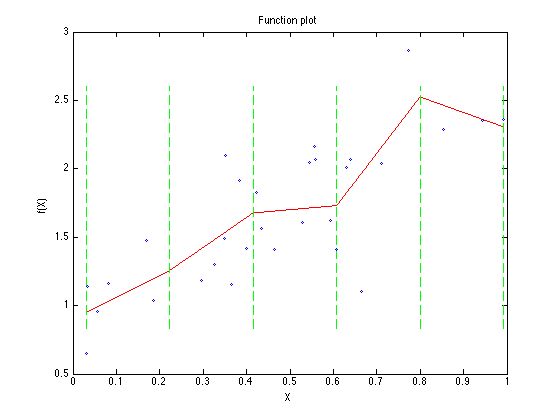
slmengine can plot too
Or we could have just told our engine to plot after it finished estimating its curve fit. This time we will fit it as a cubic spline.
close all slm = slmengine(x2,y2,'degree',3,'knots',4,'plot','on');

Computations on a spline model, min max, integral, etc.
plotslm can plot the function derivatives or integral, and slmeval can evaluate the function, its derivatives or the inverse function at specific points. However, it is occasionally useful to be able to find the minimum (or maximum) value of a spline over some interval, or find the minimum or maximum value of the slope, or compute the integral of the curve between a pair of points.
The slmpar function does these things, both for a slm form as well as a pp form.
x = -5:.1:5; y = exp(-x.^2/2)/sqrt(2*pi) + randn(size(x))/100; slm = slmengine(x,y,'plot','on','knots',15,'integral',1,'deg',3,'minval',0)
slm =
form: 'slm'
degree: 3
knots: [15x1 double]
coef: [15x2 double]
stats: [1x1 struct]
prescription: [1x1 struct]
x: [101x1 double]
y: [101x1 double]
Extrapolation: 'constant'

Of course, here the integral was forced to 1, so the integral should be correct.
res = slmpar(slm,'in')
res =
1
The maximum value should occur very near zero.
[res,loc] = slmpar(slm,'maxfun') % The next few examples show slmpar at work on a pp form, as created by spline: x = linspace(-pi,pi); y = sin(x); pp = spline(x,y);
res =
0.398803281448316
loc =
0.00140649666959857
The overall integral should be zero, or as close as floating point computations can give us for the integral of a spline.
res = slmpar(pp,'integral')
res =
-1.99926880606327e-16
The integral from 0 to pi should be 2.
res = slmpar(pp,'integral',[0,pi])
res =
1.99999995586484
The maximum of a sine wave over its period is 1, and should occur at x = pi/2.
[res,loc] = slmpar(pp,'maxfun')
res =
0.99999997621329
loc =
1.57079432824228
The minimum of a sine wave over [-1,1] should occur at the lower end point.
[res,loc] = slmpar(pp,'minfun',[-1,1])
res =
-0.841470963664934
loc =
-1
A nice thing about plotslm is it overlays the knot positions on top of the curve. The knots are at the vertical green dotted lines.
Curvature constraints
Having seen the fit above, one might wonder why one would use a shape prescriptive model at all. It appears to be little better than that 6'th order polynomial model we fit before using polyfit.
What do we know about the underlying functional relationship? We want to think in terms of fundamental shape primitives.
I'd suggest that the function is known to be positively curved. Its was a simple exponential after all. The second derivatve should never be negative.
close all slm = slmengine(x2,y2,'plot','on','concaveup','on');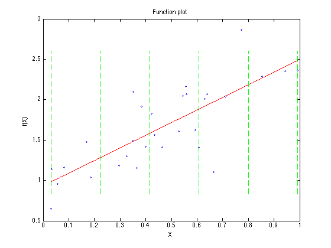
Monotonicity constraints
Having seen the fit above, one might wonder why one would use a shape prescriptive model at all. It appears to be little better than that 6'th order polynomial model we fit before using polyfit.
What do we know about the underlying functional relationship? We want to think in terms of fundamental shape primitives.
I'd suggest that the function is known to be positively curved. Its was a simple exponential after all. The second derivatve should never be negative.
close all slm = slmengine(x2,y2,'plot','on','increasing','on');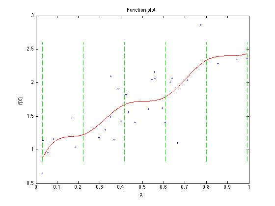
Both curvature and monotonicity constraints
Having seen the fit above, one might wonder why one would use a shape prescriptive model at all. It appears to be little better than that 6'th order polynomial model we fit before using polyfit.
What do we know about the underlying functional relationship? We want to think in terms of fundamental shape primitives.
I'd suggest that the function is known to be positively curved. It was a simple exponential after all. The second derivatve should never be negative.
close all slm = slmengine(x2,y2,'plot','on','concaveup','on','increasing','on');
Minimum slope or maximum slope constraints
Try an erf function, with just a bit of noise. But then, show that the curve can be constrained to have an overall minimum and maximum slope.
n = 100; x = 4*rand(n,1) - 2; y = erf(x) + randn(size(x))/100;
First, with no slope constraints at all
slm = slmengine(x,y,'plot','on','knots',15);

Plot the first derivative. See that it should strictly be bounded by in the interval [0,1].
xev = linspace(-2,2,1000); d = slmeval(xev,slm,1); plot(xev,d,'-') grid on

Redo the fit, but with just a touch of a constraint on the slopes.
slm = slmengine(x,y,'plot','on','knots',15,'minslope',0.1,'maxslope',0.9); d = slmeval(xev,slm,1); figure plot(xev,d,'-') grid on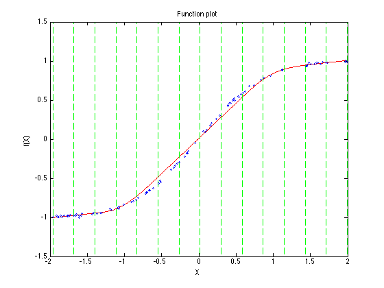 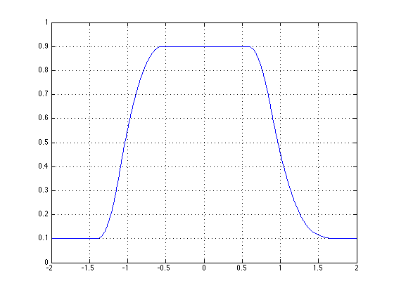
Extrapolation in the fit, non-uniform knot spacings
We might also decide to fit the curve over a wider knot range, extrapolating here beyond the data. Note that it is BETTER to build a spline to have the shape you want over a desired region then to try to extrapolate a spline that was built over a smaller region.
In fact, I try to force the user to do no extrpolation at all, unless they insist on doing so. The extrapolation options will be shown in some detail later on.
close all slm = slmengine(x2,y2,'plot','on','concaveup','on','increasing','on','knots',[-1,0:.2:1,2]);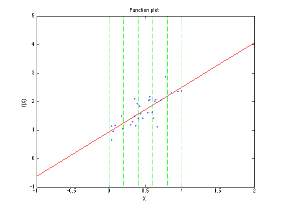
Piecewise constant models
Or even to use a lower order model. This version of my toolkit only allows piecewise constant or piecewise linear besides the cubic models.
Also, for brevity, we can always shorten any property names, as long as the name remains unambiguous. Capitalization is ignored.
slm = slmengine(x1,y1,'plot','on','kn',0:.1:1,'deg',0);

Note that I also used more knots in this last fit. I also returned to our original set of data with 100 points.
Fixed specific values
There are other shape parameters we could have set in our prescription. Kowing that the underlying relationship is an exponential, we might remember that at x == 0, that y == 1. Specific values like this are often known. If our data was from an MTF curve, we might choose to assume a modulation of 100% at a frequency of 0. Likewise, population growth data might have a known population at time == 0.
slm = slmengine(x1,y1,'plot','on','concaveup','on','knots',0:.2:1,'leftvalue',1);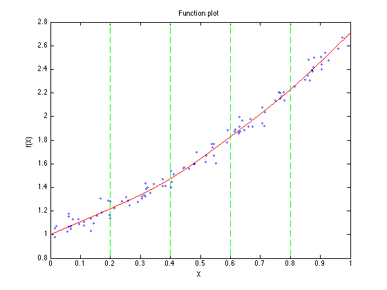
Flawed information, "Garbage in, garbage out"
What if our information is flawed? The old saying always applies.
slm = slmengine(x1,y1,'plot','on','concaveup','on','knots',0:.2:1,'leftvalue',2);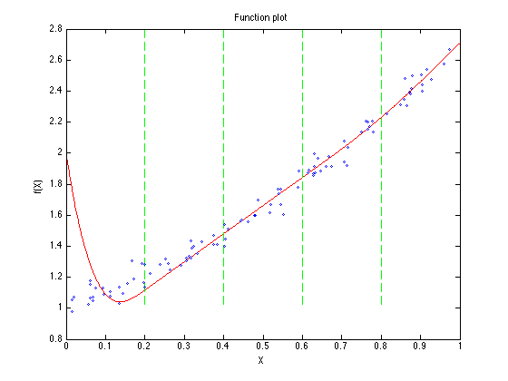
Or suppose we specify a bit too small a value for the maximum slope. The result is lack of fit.
slm = slmengine(x1,y1,'plot','on','maxslope',1.5,'knots',0:.1:1);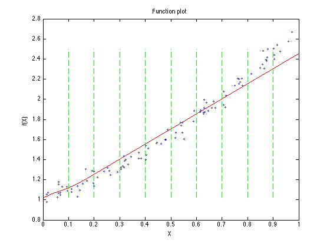
Garbage in, garbage out. If we specify a monotone decreasing function on increasing data, then we have wasted a lot of machine cycles to compute the mean of our data.
slm = slmengine(x1,y1,'plot','on','decreasing','on','knots',0:.2:1,'degree',1);

We could have done the same with somewhat less work...
slm = slmengine(x1,y1,'plot','on','degree',0,'knots',2);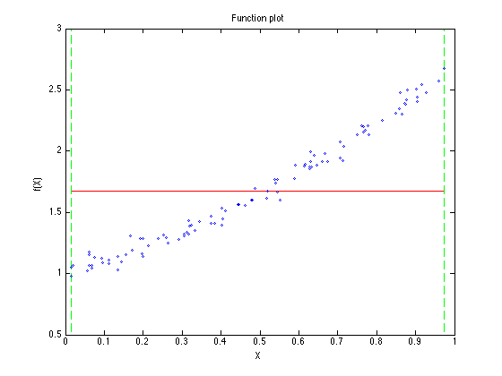
The really lazy would just use mean(y1). Perhaps efficient is a better word.
lets look at a function with slightly more interesting behaviour. still keep it simple enough that we know what it should look like.
close all n = 500; x = linspace(0,1,n)'; y = sin(x*pi) + randn(n,1)/5; slm = slmengine(x,y,'plot','on','knots',10);

If I remember correctly, sin(x) will have a negative second derivative over that interval. If I choose to apply this information to our curve, the fit gets quite good.
slm = slmengine(x,y,'plot','on','knots',10,'concavedown','on');

A simple way of specifying a curve shape with a single maximum value at some point is just this:
slm = slmengine(x,y,'plot','on','knots',0:.1:1,'simplepeak',.5);

all it does is to automatically specify increasing and decreasing regions of the curve.
lets change our data again now. Make it a fairly noisy sine wave.
clear
close all
n = 250;
x = linspace(0,1,n)';
y = sin(2*x*pi) + randn(n,1)/2;
this time we might choose to assume periodicity.
slm = slmengine(x,y,'plot','on','knots',0:.1:1,'endconditions','periodic');

That last curve had a lot of noise in it, I might not be surpised if it was a little bumpy. We also know that somewhere in the middle of the curve, this function goes through an inflection point. I'll just pick somehere to put that inflection point. Note that the curvature would be negative to the left, and positive to the right, so set a positive inflection point.
slm = slmengine(x,y,'plot','on','kn',0:.1:1,'endc','per','positiveinflection',.5);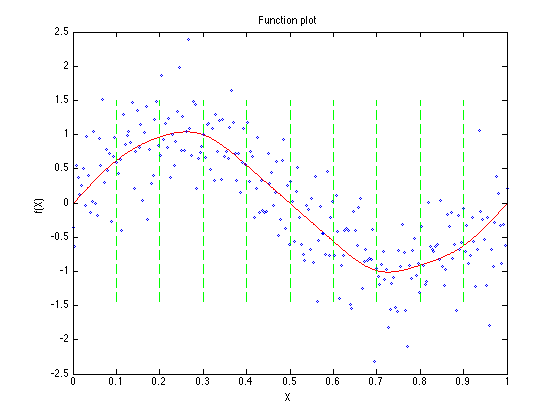
There are certainly many ways to define a prescription for the shape of a curve. We have only covered a few of them here.
Lets return to slmset though. Note that the two lines below are the same as the direct call to slmengine.
prescription = slmset('plot','on','kn',0:.1:1,'endc','per','positiveinflection',.5); slm = slmengine(x,y,prescription);

The model as it is returned includes a field with the shape prescription that defined that model. It also includes the original data in named fields. Each of these fields is useful for documentation purposes.
slm
slm =
form: 'slm'
degree: 3
knots: [11x1 double]
coef: [11x2 double]
stats: [1x1 struct]
prescription: [1x1 struct]
x: [250x1 double]
y: [250x1 double]
Extrapolation: 'constant'
We can also modify an existing prescription, adding new pieces of information.
slm = slmengine(x,y,prescription,'maxvalue',0.5);

Too many knots?
Sometimes we have little data, but use too many knots. A traditional spline model will often fail in this case, with a singular matrix warning. Slmengine will not fail, although you may not always be happy with the result. Remember, when there is little information brought to a problem by the data, a reasonable fit may still be obtained if you can add enough information from your own kowledge of the process. In this particular example, I'm tryin only to show that the use of too many kots did not result in a singularity.
clear close all n = 10; x = rand(n,1); y = sin(2*x*pi) + randn(n,1)/10; slm = slmengine(x,y,'plot','on','knots',0:.05:1);

Fewer knots may be better, even though we did survive having way too many knots.
slm = slmengine(x,y,'plot','on','knots',[0 1]);

And while it may be a little slow, one can use cross validation to help smooth your curve. Don't try it with too many knots or too many points.
slm = slmengine(x,y,'plot','on','knots',0:.05:1,'regularization','cross');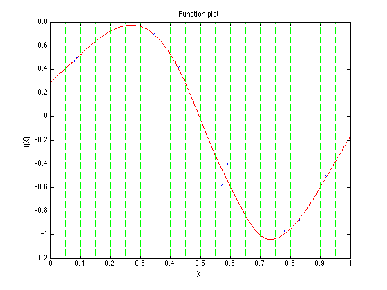
Another option, if you had a decent estimate of the error standard deviation, is to supply that value. slmengine will build a fit with the desired residual error.
slm = slmengine(x,y,'plot','on','knots',0:.05:1,'regularization',-0.10);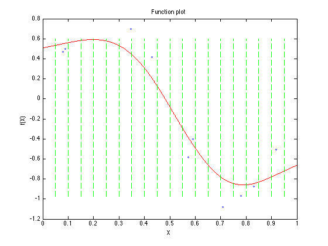
Use in practice
for some more realistic data, try this one out. The function is known to be increasing, and everywhere non-negative. There is a little curvature at the bottom that is probably real. At the top end, we expect the curve to be moderately well behaved so extrapolation to x = 255 is linear.
close all load scann slm = slmengine(R,L,'plot','on','knots', ... [0 5 10 15 20 30 50 80 120 160 200 255],'leftminvalue',0,'increasing','on','deg',3,'linearregion',[200,255])
slm =
form: 'slm'
degree: 3
knots: [12x1 double]
coef: [12x2 double]
stats: [1x1 struct]
prescription: [1x1 struct]
x: [42x1 double]
y: [42x1 double]
Extrapolation: 'constant'
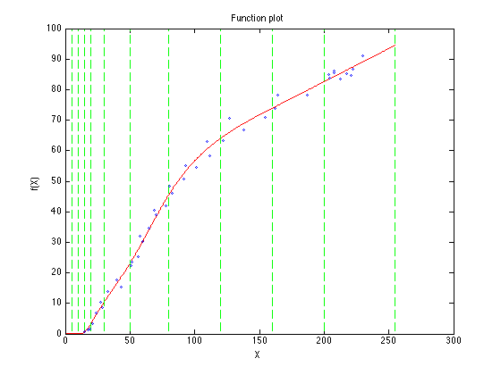 I often see people using splines wrongly. For example, given a relationship with a derivative singularity, how best to build a spline model?
x = linspace(0,1,20); truefun = @(x) nthroot(x,5); y = truefun(x); xfine = linspace(0,1,1000); yfine = truefun(xfine); plot(x,y,'-o') title 'A singularity at x = 0' xlabel X ylabel Y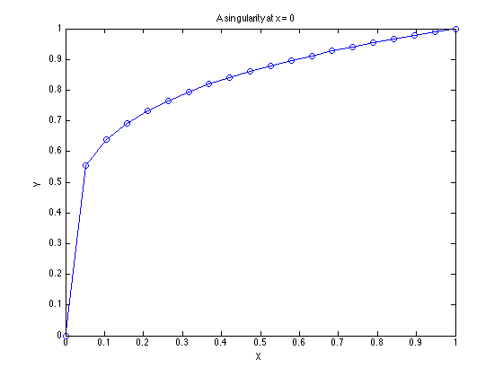
Obviously, fitting a spline to this data, in the form y(x), we should expect a problem. Even with no noise present in the system.
slm = slmengine(x,y,'plot','on','knots',10) hold on plot(xfine,yfine,'b--') hold off
slm =
form: 'slm'
degree: 3
knots: [10x1 double]
coef: [10x2 double]
stats: [1x1 struct]
prescription: [1x1 struct]
x: [20x1 double]
y: [20x1 double]
Extrapolation: 'constant'
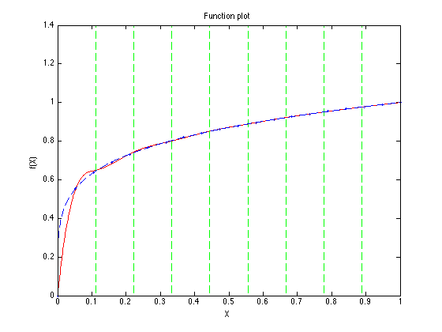 We might force the spline to be monotone, or even choose a non-uniform knot spacing, but the derivative singularity at x == 0 is too much for polynomial segments to handle well.
slm = slmengine(x,y,'plot','on','knots',[0 .01 .02 .05 .1 .3 .6 1],'incr','on','concavedown','on') hold on plot(xfine,yfine,'b--') hold off
slm =
form: 'slm'
degree: 3
knots: [8x1 double]
coef: [8x2 double]
stats: [1x1 struct]
prescription: [1x1 struct]
x: [20x1 double]
y: [20x1 double]
Extrapolation: 'constant'

A better solution is to recognize the essential singularity in the problem. Here, swap the dependent and independent variables. What was once a singularity is no longer so. Se that the spline fit and the original function now overlay each other almost perfectly here.
slm = slmengine(y,x,'plot','on','knots',10,'incr','on','concaveup','on','deg',3) hold on plot(yfine,xfine,'b--') hold off
slm =
form: 'slm'
degree: 3
knots: [10x1 double]
coef: [10x2 double]
stats: [1x1 struct]
prescription: [1x1 struct]
x: [20x1 double]
y: [20x1 double]
Extrapolation: 'constant'

Of course, prediction will be more difficult, since the resulting model must be interpolated in an inverse form. slmevel can do so. The result here would be 0.7, IF the spline were an exact representation of the fifth root of its input. Since we live in a floating point world, the result is as close as I might expect.
format long g slmeval(0.7.^5,slm,-1) format short g
ans =
0.700006517591832
Returning a set of points, evaluated through the fitted curve.
SLM has the ability to generate a list of points, then evaluate them through the resulting model. While this is easily enough done using slmeval, this is a friendly option that will save a set for the user. By default, 1001 points are generated along the curve, however, any number of equally spaced points can be generated. For the user who wishes for an unequal (user specified) spacing, there is always slmeval to fall back upon. In this example, only 11 equally spaced points are generated along the curve to be returned. The user can then plot these points as they choose. Of course, plotslm has significantly more functionality than a simple plot, since you can view more than just the simple function values.
close all format long g [slm,xp,yp] = slmengine(y,x,'knots',10,'incr','on','concaveup','on','rightvalue',1,'predictions',11)
slm =
form: 'slm'
degree: 3
knots: [10x1 double]
coef: [10x2 double]
stats: [1x1 struct]
prescription: [1x1 struct]
x: [20x1 double]
y: [20x1 double]
Extrapolation: 'constant'
xp =
Columns 1 through 3
0 0.1 0.2
Columns 4 through 6
0.3 0.4 0.5
Columns 7 through 9
0.6 0.7 0.8
Columns 10 through 11
0.9 1
yp =
Columns 1 through 3
-7.40407735122517e-13 -7.39868166732549e-13 1.92543951536735e-05
Columns 4 through 6
0.000916087696799303 0.00912838378935081 0.031122256476577
Columns 7 through 9
0.077749570606054 0.168062444052809 0.327684525849983
Columns 10 through 11
0.590505873560403 1
Combining various constraints to produce a better model
On this curve, we know the actual form. It should be a hyperbolic shape, that approaches a linear asymptote.
x = rand(40,1);
y = x - 1./(10*(x+.1)) + randn(size(x))/25;
plot(x,y,'o')

We can model the curve as simply a monotone increasing function. I'll use more knots than I really need to exacerbate the problem. (There really are way too many knots in this spline, possibly causing numerical problems.)
slm = slmengine(x,y,'incr','on','knots',35,'plot','on')
slm =
form: 'slm'
degree: 3
knots: [35x1 double]
coef: [35x2 double]
stats: [1x1 struct]
prescription: [1x1 struct]
x: [40x1 double]
y: [40x1 double]
Extrapolation: 'constant'
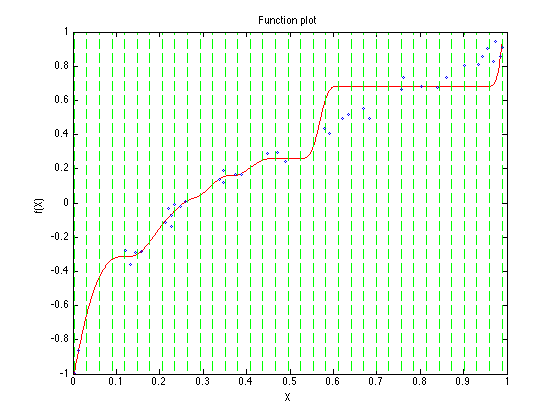 Now, try enforcing both monotonicity, and a concave down function, (a negative second derivative.)
slm = slmengine(x,y,'incr','on','concavedown','on','knots',35,'plot','on')
slm =
form: 'slm'
degree: 3
knots: [35x1 double]
coef: [35x2 double]
stats: [1x1 struct]
prescription: [1x1 struct]
x: [40x1 double]
y: [40x1 double]
Extrapolation: 'constant'
Our second try is better, but still not well enough behaved. See that by requiring that the jerk be positive everywhere, we get a nice, smooth curve, even with far too many knots for this simple curve. In fact, it even appears to be approaching a linear asymptote.
slm = slmengine(x,y,'incr','on','jerk','positive','concavedown','on','knots',35,'plot','on')
slm =
form: 'slm'
degree: 3
knots: [35x1 double]
coef: [35x2 double]
stats: [1x1 struct]
prescription: [1x1 struct]
x: [40x1 double]
y: [40x1 double]
Extrapolation: 'constant'
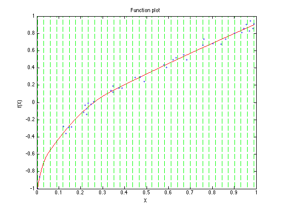 Extrapolation of a spline model
Normally, I try to push a user to NOT extrapolate a spline model. Cubic polynomial segments do squirrely things away from where they were used in a fit. So if you seriously tried to extrapolate a cubic spline, then don't be surprised to see it do silly things. For this reason the default for SLMEVAL is to only extrapolate as a constant function. Thus below the first knot or above the top knot, the spline prediction will take on the values of the function at the corresponding knot, but no more. Essentially only constant extrapolation is done.
SLMSET does provide for other options in extrapolation, but only if you ask for it. The 'extrapolation' prescription may take on the values:
{'error', 'warning', 'constant', 'linear', 'cubic', 'NaN'}The default is 'constant'. For this case, constant extrapolation is done with with no warning generated for all points outside of the knots. The other options seem pretty stratight forward.
'error' generates an error if any point falls outside the knots.
'warning' generates a warning message, then does constant extrapolation.
'constant' does constant extrapolation. (The default)
'linear' does linear extrapolation.
'cubic' does cubic extrapolation.
'nan' inserts NaN values for all points outside the knots.
close all
x = 0:.1:1;
y = sin(2*pi*x) + randn(size(x))/100;
See that the Extrapolation field has been set to 'constant' by default.
slm = slmengine(x,y,'knots',x,'plot','on')
slm =
form: 'slm'
degree: 3
knots: [11x1 double]
coef: [11x2 double]
stats: [1x1 struct]
prescription: [1x1 struct]
x: [11x1 double]
y: [11x1 double]
Extrapolation: 'constant'
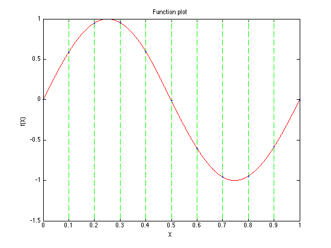 See what happens when various extrapolation modes are specified though. Note that the extrapolation type is indicated when you create the spline itself. I won't show what happens when 'error' is chosen, since that will screw up this published document. You can guess though.
xev = -1:.01:2;
Warning throws a warning if extrapolation is tried, then does constant extrapolation, like the default.
slm = slmengine(x,y,'knots',x,'extrapolation','warning'); yev = slmeval(xev,slm,0); plot(x,y,'o',xev,yev,'r-') title 'Constant extrapolation (warning generated)'
Warning: One or more points fell outside of the knots. constant extrapolation performed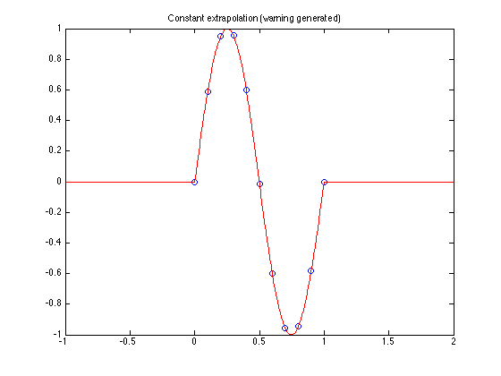
Linear simply does linear extrapolation, with no warnings or errors.
slm = slmengine(x,y,'knots',x,'extrapolation','linear'); yev = slmeval(xev,slm,0); plot(x,y,'o',xev,yev,'r-') title 'Linear extrapolation'

Cubic simply does cubic extrapolation, with no warnings or errors. I would rarely ever recommend 'cubic' extrpolation, certainly not if you extraapolate too far. See what happens here.
slm = slmengine(x,y,'knots',x,'extrapolation','cubic'); yev = slmeval(xev,slm,0); plot(x,y,'o',xev,yev,'r-') title 'Cubic extrapolation'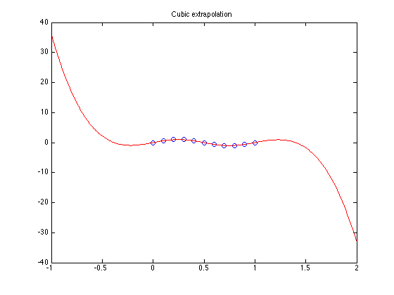
You can get information about the fit itself
slmengine always returns this information in the stats field of the returned model. However, the verbosity propert has three levels {0,1,2}. 0 tells slmengine to be quiet, with no output to the command line. 1 tells it to report fit statistics at the command line,
close all slm = slmengine(x,y,'verbosity',1);
========================================= lse ========================================= ========================================= MODEL STATISTICS REPORT Number of data points: 11 Scale factor applied to y 0.52313 Shift applied to y 1.1188 Total degrees of freedom: 12 Net degrees of freedom: 8 R-squared: 0.99997 Adjusted R-squared: 0.99988 RMSE: 0.0075957 Range of prediction errors: -0.0072076 0.0070584 Error quartiles (25%, 75%): -0.0017497 0.003199 =========================================
and verbosity of 2 tells slmengine to be more expressive yet.
slm = slmengine(x,y,'verbosity',1);
========================================= lse ========================================= ========================================= MODEL STATISTICS REPORT Number of data points: 11 Scale factor applied to y 0.52313 Shift applied to y 1.1188 Total degrees of freedom: 12 Net degrees of freedom: 8 R-squared: 0.99997 Adjusted R-squared: 0.99988 RMSE: 0.0075957 Range of prediction errors: -0.0072076 0.0070584 Error quartiles (25%, 75%): -0.0017497 0.003199 =========================================
Knot placement optimization
You can let an optimizer choose the knots. It may give you better results than a blind choice of knots. But, the fact is all optimizers can get lost at times.
close all x = -5:.1:5; y = erf(x) + randn(size(x))/100; slm = slmengine(x,y,'increasing','on','plot','on','degree',1, ... 'interiorknots','free','knots',10)
slm =
form: 'slm'
degree: 1
knots: [10x1 double]
coef: [10x1 double]
stats: [1x1 struct]
prescription: [1x1 struct]
x: [101x1 double]
y: [101x1 double]
Extrapolation: 'constant'
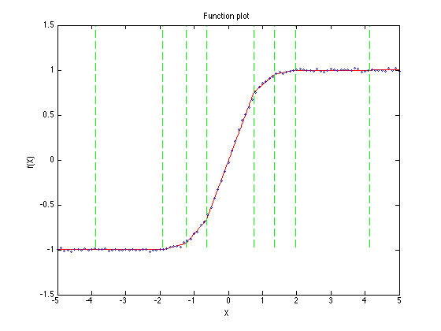 If however, you have some idea where the knots might belong based on the shape of your function, then it is a good idea to provide some input. Here for example, there is little happening with this function on both ends of the curve. So why waste the knots out there?
slm = slmengine(x,y,'increasing','on','plot','on','degree',1,... 'interiorknots','free','knots',[-5 -1.25 -1 -.75 -.5 .5 .75 1 1.25 5])
slm =
form: 'slm'
degree: 1
knots: [10x1 double]
coef: [10x1 double]
stats: [1x1 struct]
prescription: [1x1 struct]
x: [101x1 double]
y: [101x1 double]
Extrapolation: 'constant'

slmpar has some other options, that are not terribly useful for computation, but are nice to understand how splines work, as well as how the coefficients are stored in these spline containers. These last options in slmpar require the symbolic toolbox.
First, I'll create a piecewise linear spline with 4 segments.
x = linspace(-pi,pi,100); y = sin(x); slm = slmengine(x,y,'knots',5,'result','slm','degree',1)
slm =
form: 'slm'
degree: 1
knots: [5x1 double]
coef: [5x1 double]
stats: [1x1 struct]
prescription: [1x1 struct]
x: [100x1 double]
y: [100x1 double]
Extrapolation: 'constant'
The SLM storage form can be called a Hermite form. It contains a list of knots, and the function values of the curve at those knots. So we see below the first column isthe list of knots, while the second column the values of the sine function approximation at those knots.
[slm.knots,slm.coef]
ans =
-3.14159265358979 -0.0917040748632527
-1.5707963267949 -1.19301540478917
0 -1.33209993392464e-15
1.5707963267949 1.19301540478917
3.14159265358979 0.0917040748632509
However, we can see the actual linear polynoial segments using slmpar. This option tells slmpar to create a cell array that lists the knot intervals over which each segment is defined, as well as the actual linear polynomial used over that interval, as a symbolic polynomial in the variable x.
p = slmpar(slm,'symabs')
p{:}
p =
[1x2 double] [1x2 double] [1x2 double] [1x2 double]
[1x1 sym ] [1x1 sym ] [1x1 sym ] [1x1 sym ]
ans =
-3.14159265358979 -1.5707963267949
ans =
- 0.70111656816327772023811348844902*x - 2.2943267347150934757856043826599
ans =
-1.5707963267949 0
ans =
0.75949719542790039561452886118786*x - 0.0000000000000013139637232895128895315501627765
ans =
0 1.5707963267949
ans =
0.75949719542790206094906579892267*x - 0.0000000000000013320999339246355654677894198042
ans =
1.5707963267949 3.14159265358979
ans =
2.2943267347150951509722696831747 - 0.70111656816327883046113811360556*x
We can use slmpar to understand the pp form of a spline, and how the spline coefficients are stored. They are stored as the coefficients of a polynomial in standard matlab poly form, so highest order coefficient first. However, the pp form uses what I'll call a relative polynomial.
pp = slm2pp(slm)
pp =
form: 'pp'
breaks: [1x5 double]
coefs: [4x2 double]
pieces: 4
order: 2
dim: 1
prescription: [1x1 struct]
We can list out the breaks (or knots if you choose) of the spline. between each pair of breaks, there is here a linear polynomial segment defined. However, the i'th such polynomial will be evaluated as if it lives in the interval [0,pp.breaks(i+1) - pp.breaks(i)]
pp.breaks pp.coefs
ans =
Columns 1 through 3
-3.14159265358979 -1.5707963267949 0
Columns 4 through 5
1.5707963267949 3.14159265358979
ans =
-0.701116568163278 -0.0917040748632527
0.7594971954279 -1.19301540478917
0.759497195427902 -1.33209993392464e-15
-0.701116568163279 1.19301540478917
So the first linear polynomial segment actually lives on the interval
[pp.breaks(1),pp.breaks(2)]
ans =
-3.14159265358979 -1.5707963267949
However, it is evaluated on the translated interval
[0,pp.breaks(2)-pp.breaks(1)]
ans =
0 1.5707963267949
This translation of the interval is not terribly important when one is working with linear spline segments, but when cubic (or even higher order) segments are employed, there may well be numerical issues if MATLAB is forced to take powers of very large numbers. Suppose for example, our spline was forced to be evaluated for numbers on the order of 1e10? Now forming the cube of such large numbers will cause massive loss of accuracy in the floating point numbers.
Similarly, we might create a cubic spline. Here I'll use only 4 knots, thus three cubic segments, but I'll generate data that lies in a different domain.
x = linspace(1e6,1e6 + 3,100); y = sin(x); slm = slmengine(x,y,'knots',4,'result','slm','degree',3,'plot','on')
slm =
form: 'slm'
degree: 3
knots: [4x1 double]
coef: [4x2 double]
stats: [1x1 struct]
prescription: [1x1 struct]
x: [100x1 double]
y: [100x1 double]
Extrapolation: 'constant'
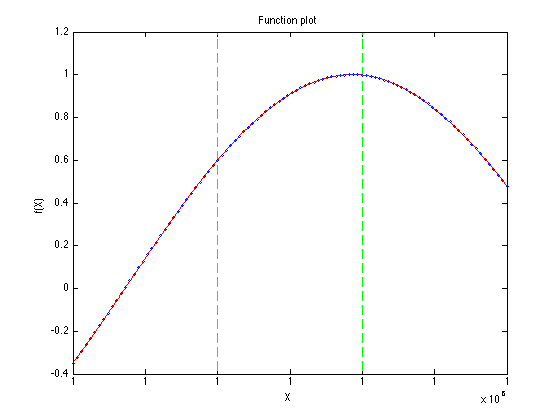 First, lets understand the Hermite form here. The first column below is the list of knots. The second column the function values at those knots, and the third column contains the first derivatives of the spline function at those knots. Personally, I've always had a preference for this form because one can easily visualize much about the shape of the cubic segments directly from those coefficients.
[slm.knots,slm.coef]
ans =
1000000 -0.348818178910342 0.92337369009334
1000001 0.600371047473742 0.797449369267933
1000002 0.998889373328151 -0.070048510449592
1000003 0.478882305961743 -0.881721552005562
Converting the spline to its pp form, we get:
pp = slm2pp(slm)
pp =
form: 'pp'
breaks: [1000000 1000001 1000002 1000003]
coefs: [3x4 double]
pieces: 3
order: 4
dim: 1
prescription: [1x1 struct]
There are 4 breaks, so 3 segments. These coefficients presume the relative form for evaluation
pp.coefs
crel = slmpar(pp,'symrel')
crel{:}
ans =
Columns 1 through 3
-0.177555393406895 0.203370929697638 0.92337369009334
-0.0696357928904787 -0.329295250523044 0.797449369267933
0.0882440722776625 -0.538202629194479 -0.070048510449592
Column 4
-0.348818178910342
0.600371047473742
0.998889373328151
crel =
[1x2 double] [1x2 double] [1x2 double]
[1x1 sym ] [1x1 sym ] [1x1 sym ]
ans =
1000000 1000001
ans =
- 0.17755539340689452387778146658093*u^3 + 0.20337092969763836958208003125037*u^2 + 0.92337369009333969405162179100444*u - 0.34881817891034189171861612521752
ans =
1000001 1000002
ans =
- 0.069635792890478748207172543516208*u^3 - 0.32929525052304431387284466836718*u^2 + 0.7974493692679328615824374537624*u + 0.60037104747374159252615299919853
ans =
1000002 1000003
ans =
0.088244072277662510828122321981937*u^3 - 0.53820262919447892091540097680991*u^2 - 0.07004851044959195527361828226276*u + 0.99888937332815141978414885670645
See however, what happens to the coefficients of the polynomials in the absolute form. Those coefficients are now a bit nasty for a cubic polynomial. If x is on the order of 1e6, I would expect to see a serious loss of accuracy.
cabs = slmpar(pp,'symabs')
cabs{:}
cabs =
[1x2 double] [1x2 double] [1x2 double]
[1x1 sym ] [1x1 sym ] [1x1 sym ]
ans =
1000000 1000001
ans =
- 0.17755539340689452387778146658093*x^3 + 532666.38359161326927171398182281*x^2 - 532666586961.61959321999022420879*x + 177555596776900847.47723953005657
ans =
1000001 1000002
ans =
- 0.069635792890478748207172543516208*x^3 + 208907.25828356439301344837922159*x^2 - 208907137894.44540891373654264984*x + 69635672501359763.650722927517707
ans =
1000002 1000003
ans =
0.088244072277662510828122321981937*x^3 - 264733.28450005039293835285008072*x^2 + 264734352170.25494426599900807395*x - 88245139947867063.875545180747051
To compare the accuracy problems one would expect, what is the sin of a moderately large number?
sin(sym('1e6 + 0.5'))
sin(1e6 + 0.5)
slmeval(1e6 + 0.5,slm)
ans =
0.14195469900074400352584942400447
ans =
0.141954699000744
ans =
0.141516974384876
So the 4 knot spline fit itself was only accurate to about 3 significant digits. Lets now use polyval to evaluate those polynomials at that same effective location. The relative form returns a value that matches slmeval exactly, as well as being a viable value for the sine function. However, the absolute form just returns numerical junk.
polyval(fliplr(double(coeffs(crel{2,1}))),0.5)
polyval(fliplr(double(coeffs(cabs{2,1}))),1e6 + 0.5)
close all
ans =
0.141516974384876
ans =
-32